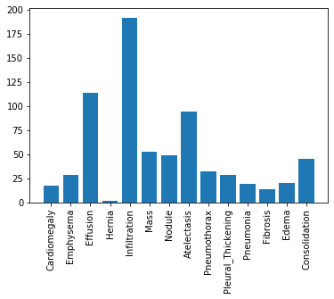

train_results = pd.read_csv("data/train_preds.csv")
valid_results = pd.read_csv("data/valid_preds.csv")
# the labels in our dataset
class_labels = ['Cardiomegaly',
'Emphysema',
'Effusion',
'Hernia',
'Infiltration',
'Mass',
'Nodule',
'Atelectasis',
'Pneumothorax',
'Pleural_Thickening',
'Pneumonia',
'Fibrosis',
'Edema',
'Consolidation']
# the labels for prediction values in our dataset
pred_labels = [l + "_pred" for l in class_labels]1 Introduction
In my previous article I developed a deep learning model able to classify 14 different diseases using chest x-rays. There are various meterics available to help evaluate model performance, but there are specific metrics that are of particular relevance to evaluating models for medical diagnosis. These metrics which we will be covering in this article are:
- Accuracy
- Prevalence
- Specificity & Sensitivity
- PPV and NPV
- ROC curve and AUCROC (c-statistic)
- Confidence Intervals
2 Overview
Let’s take a look at our dataset. The data is stored in two CSV files called train_preds.csv and valid_preds.csv. We have precomputed the model outputs for our test cases. We’ll work with these predictions and the true class labels throughout this article.
Extract the labels (y) and the predictions (pred).
y = valid_results[class_labels].values
pred = valid_results[pred_labels].valuesRun the next cell to view them side by side.
# let's take a peek at our dataset
valid_results[np.concatenate([class_labels, pred_labels])].head()| Cardiomegaly | Emphysema | Effusion | Hernia | Infiltration | Mass | Nodule | Atelectasis | Pneumothorax | Pleural_Thickening | ... | Infiltration_pred | Mass_pred | Nodule_pred | Atelectasis_pred | Pneumothorax_pred | Pleural_Thickening_pred | Pneumonia_pred | Fibrosis_pred | Edema_pred | Consolidation_pred | |
|---|---|---|---|---|---|---|---|---|---|---|---|---|---|---|---|---|---|---|---|---|---|
| 0 | 0 | 0 | 0 | 0 | 0 | 0 | 0 | 0 | 0 | 0 | ... | 0.256020 | 0.266928 | 0.312440 | 0.460342 | 0.079453 | 0.271495 | 0.276861 | 0.398799 | 0.015867 | 0.156320 |
| 1 | 0 | 0 | 0 | 0 | 1 | 0 | 1 | 0 | 0 | 0 | ... | 0.382199 | 0.176825 | 0.465807 | 0.489424 | 0.084595 | 0.377318 | 0.363582 | 0.638024 | 0.025948 | 0.144419 |
| 2 | 0 | 0 | 0 | 0 | 0 | 0 | 0 | 0 | 0 | 0 | ... | 0.427727 | 0.115513 | 0.249030 | 0.035105 | 0.238761 | 0.167095 | 0.166389 | 0.262463 | 0.007758 | 0.125790 |
| 3 | 0 | 0 | 0 | 0 | 0 | 0 | 0 | 0 | 0 | 0 | ... | 0.158596 | 0.259460 | 0.334870 | 0.266489 | 0.073371 | 0.229834 | 0.191281 | 0.344348 | 0.008559 | 0.119153 |
| 4 | 0 | 0 | 0 | 0 | 0 | 0 | 0 | 0 | 0 | 0 | ... | 0.536762 | 0.198797 | 0.273110 | 0.186771 | 0.242122 | 0.309786 | 0.411771 | 0.244666 | 0.126930 | 0.342409 |
5 rows × 28 columns
To further understand our dataset details, here’s a histogram of the number of samples for each label in the validation dataset:
plt.xticks(rotation=90)
plt.bar(x = class_labels, height= y.sum(axis=0));
It seem like our dataset has an imbalanced population of samples. Specifically, our dataset has a small number of patients diagnosed with a Hernia.
3 Metrics
3.1 True Positives, False Positives, True Negatives and False Negatives
The most basic statistics to compute from the model predictions are the true positives, true negatives, false positives, and false negatives.
As the name suggests - True Positive (TP): The model classifies the example as positive, and the actual label also positive. - False Positive (FP): The model classifies the example as positive, but the actual label is negative. - True Negative (TN): The model classifies the example as negative, and the actual label is also negative. - False Negative (FN): The model classifies the example as negative, but the label is actually positive.
We will count the number of TP, FP, TN and FN in the given data. All of our metrics can be built off of these four statistics.
Recall that the model outputs real numbers between 0 and 1. * To compute binary class predictions, we need to convert these to either 0 or 1. * We’ll do this using a threshold value \(th\). * Any model outputs above \(th\) are set to 1, and below \(th\) are set to 0.
All of our metrics (except for AUC at the end) will depend on the choice of this threshold.
Let’s define some functions for computing each of these basic statistics.
def true_positives(y, pred, th=0.5):
"""
Count true positives.
Args:
y (np.array): ground truth, size (n_examples)
pred (np.array): model output, size (n_examples)
th (float): cutoff value for positive prediction from model
Returns:
TP (int): true positives
"""
TP = 0
# get thresholded predictions
thresholded_preds = pred >= th
# compute TP
TP = np.sum((y == 1) & (thresholded_preds == 1))
return TP
def true_negatives(y, pred, th=0.5):
"""
Count true negatives.
Args:
y (np.array): ground truth, size (n_examples)
pred (np.array): model output, size (n_examples)
th (float): cutoff value for positive prediction from model
Returns:
TN (int): true negatives
"""
TN = 0
# get thresholded predictions
thresholded_preds = pred >= th
# compute TN
TN = np.sum((y == 0) & (thresholded_preds == 0))
return TN
def false_positives(y, pred, th=0.5):
"""
Count false positives.
Args:
y (np.array): ground truth, size (n_examples)
pred (np.array): model output, size (n_examples)
th (float): cutoff value for positive prediction from model
Returns:
FP (int): false positives
"""
FP = 0
# get thresholded predictions
thresholded_preds = pred >= th
# compute FP
FP = np.sum((y == 0) & (thresholded_preds == 1))
return FP
def false_negatives(y, pred, th=0.5):
"""
Count false positives.
Args:
y (np.array): ground truth, size (n_examples)
pred (np.array): model output, size (n_examples)
th (float): cutoff value for positive prediction from model
Returns:
FN (int): false negatives
"""
FN = 0
# get thresholded predictions
thresholded_preds = pred >= th
# compute FN
FN = np.sum((y == 1) & (thresholded_preds == 0))
return FN
# Test functions
get_tp_tn_fp_fn_test(true_positives, true_negatives, false_positives, false_negatives) | y_test | preds_test | category | |
|---|---|---|---|
| 0 | 1 | 0.8 | TP |
| 1 | 1 | 0.7 | TP |
| 2 | 0 | 0.4 | TN |
| 3 | 0 | 0.3 | TN |
| 4 | 0 | 0.2 | TN |
| 5 | 0 | 0.5 | FP |
| 6 | 0 | 0.6 | FP |
| 7 | 0 | 0.7 | FP |
| 8 | 0 | 0.8 | FP |
| 9 | 1 | 0.1 | FN |
| 10 | 1 | 0.2 | FN |
| 11 | 1 | 0.3 | FN |
| 12 | 1 | 0.4 | FN |
| 13 | 1 | 0.0 | FN |
Your functions calcualted:
TP: 2
TN: 3
FP: 4
FN: 5
All tests passed.
All tests passed.
All tests passed.
All tests passed.Expected output
Your functions calcualted:
TP: 2
TN: 3
FP: 4
FN: 5 All tests passed.
All tests passed.
All tests passed.
All tests passed.
# Add these to a table for each disease
util.get_performance_metrics(y, pred, class_labels)| TP | TN | FP | FN | Accuracy | Prevalence | Sensitivity | Specificity | PPV | NPV | AUC | F1 | Threshold | |
|---|---|---|---|---|---|---|---|---|---|---|---|---|---|
| Cardiomegaly | 16 | 814 | 169 | 1 | Not Defined | Not Defined | Not Defined | Not Defined | Not Defined | Not Defined | Not Defined | Not Defined | 0.5 |
| Emphysema | 20 | 869 | 103 | 8 | Not Defined | Not Defined | Not Defined | Not Defined | Not Defined | Not Defined | Not Defined | Not Defined | 0.5 |
| Effusion | 99 | 690 | 196 | 15 | Not Defined | Not Defined | Not Defined | Not Defined | Not Defined | Not Defined | Not Defined | Not Defined | 0.5 |
| Hernia | 1 | 743 | 255 | 1 | Not Defined | Not Defined | Not Defined | Not Defined | Not Defined | Not Defined | Not Defined | Not Defined | 0.5 |
| Infiltration | 114 | 543 | 265 | 78 | Not Defined | Not Defined | Not Defined | Not Defined | Not Defined | Not Defined | Not Defined | Not Defined | 0.5 |
| Mass | 40 | 789 | 158 | 13 | Not Defined | Not Defined | Not Defined | Not Defined | Not Defined | Not Defined | Not Defined | Not Defined | 0.5 |
| Nodule | 28 | 731 | 220 | 21 | Not Defined | Not Defined | Not Defined | Not Defined | Not Defined | Not Defined | Not Defined | Not Defined | 0.5 |
| Atelectasis | 64 | 657 | 249 | 30 | Not Defined | Not Defined | Not Defined | Not Defined | Not Defined | Not Defined | Not Defined | Not Defined | 0.5 |
| Pneumothorax | 24 | 785 | 183 | 8 | Not Defined | Not Defined | Not Defined | Not Defined | Not Defined | Not Defined | Not Defined | Not Defined | 0.5 |
| Pleural_Thickening | 24 | 713 | 259 | 4 | Not Defined | Not Defined | Not Defined | Not Defined | Not Defined | Not Defined | Not Defined | Not Defined | 0.5 |
| Pneumonia | 14 | 661 | 320 | 5 | Not Defined | Not Defined | Not Defined | Not Defined | Not Defined | Not Defined | Not Defined | Not Defined | 0.5 |
| Fibrosis | 10 | 725 | 261 | 4 | Not Defined | Not Defined | Not Defined | Not Defined | Not Defined | Not Defined | Not Defined | Not Defined | 0.5 |
| Edema | 15 | 767 | 213 | 5 | Not Defined | Not Defined | Not Defined | Not Defined | Not Defined | Not Defined | Not Defined | Not Defined | 0.5 |
| Consolidation | 36 | 658 | 297 | 9 | Not Defined | Not Defined | Not Defined | Not Defined | Not Defined | Not Defined | Not Defined | Not Defined | 0.5 |
Right now it only has TP, TN, FP, FN. Throughout this article we’ll fill in all the other metrics to learn more about our model performance.
3.2 Accuracy
Let’s use a threshold of .5 for the probability cutoff for our predictions for all classes and calculate our model’s accuracy as we would normally do in a machine learning problem.
\[accuracy = \frac{\text{true positives} + \text{true negatives}}{\text{true positives} + \text{true negatives} + \text{false positives} + \text{false negatives}}\]
Let’s define a function to calculate this.
def get_accuracy(y, pred, th=0.5):
"""
Compute accuracy of predictions at threshold.
Args:
y (np.array): ground truth, size (n_examples)
pred (np.array): model output, size (n_examples)
th (float): cutoff value for positive prediction from model
Returns:
accuracy (float): accuracy of predictions at threshold
"""
accuracy = 0.0
# get TP, FP, TN, FN using our previously defined functions
TP = true_positives(y, pred, th)
FP = false_positives(y, pred, th)
TN = true_negatives(y, pred, th)
FN = false_negatives(y, pred, th)
# Compute accuracy using TP, FP, TN, FN
accuracy = (TP + TN) / (TP + FP + TN + FN)
return accuracy
# Test function
get_accuracy_test(get_accuracy)Test Case:
Test Labels: [1 0 0 1 1]
Test Predictions: [0.8 0.8 0.4 0.6 0.3]
Threshold: 0.5
Computed Accuracy: 0.6
All tests passed.Expected output:
Test Case:
Test Labels: [1 0 0 1 1]
Test Predictions: [0.8 0.8 0.4 0.6 0.3]
Threshold: 0.5
Computed Accuracy: 0.6 All tests passed.Let’s compute this for each disease.
util.get_performance_metrics(y, pred, class_labels, acc=get_accuracy)| TP | TN | FP | FN | Accuracy | Prevalence | Sensitivity | Specificity | PPV | NPV | AUC | F1 | Threshold | |
|---|---|---|---|---|---|---|---|---|---|---|---|---|---|
| Cardiomegaly | 16 | 814 | 169 | 1 | 0.83 | Not Defined | Not Defined | Not Defined | Not Defined | Not Defined | Not Defined | Not Defined | 0.5 |
| Emphysema | 20 | 869 | 103 | 8 | 0.889 | Not Defined | Not Defined | Not Defined | Not Defined | Not Defined | Not Defined | Not Defined | 0.5 |
| Effusion | 99 | 690 | 196 | 15 | 0.789 | Not Defined | Not Defined | Not Defined | Not Defined | Not Defined | Not Defined | Not Defined | 0.5 |
| Hernia | 1 | 743 | 255 | 1 | 0.744 | Not Defined | Not Defined | Not Defined | Not Defined | Not Defined | Not Defined | Not Defined | 0.5 |
| Infiltration | 114 | 543 | 265 | 78 | 0.657 | Not Defined | Not Defined | Not Defined | Not Defined | Not Defined | Not Defined | Not Defined | 0.5 |
| Mass | 40 | 789 | 158 | 13 | 0.829 | Not Defined | Not Defined | Not Defined | Not Defined | Not Defined | Not Defined | Not Defined | 0.5 |
| Nodule | 28 | 731 | 220 | 21 | 0.759 | Not Defined | Not Defined | Not Defined | Not Defined | Not Defined | Not Defined | Not Defined | 0.5 |
| Atelectasis | 64 | 657 | 249 | 30 | 0.721 | Not Defined | Not Defined | Not Defined | Not Defined | Not Defined | Not Defined | Not Defined | 0.5 |
| Pneumothorax | 24 | 785 | 183 | 8 | 0.809 | Not Defined | Not Defined | Not Defined | Not Defined | Not Defined | Not Defined | Not Defined | 0.5 |
| Pleural_Thickening | 24 | 713 | 259 | 4 | 0.737 | Not Defined | Not Defined | Not Defined | Not Defined | Not Defined | Not Defined | Not Defined | 0.5 |
| Pneumonia | 14 | 661 | 320 | 5 | 0.675 | Not Defined | Not Defined | Not Defined | Not Defined | Not Defined | Not Defined | Not Defined | 0.5 |
| Fibrosis | 10 | 725 | 261 | 4 | 0.735 | Not Defined | Not Defined | Not Defined | Not Defined | Not Defined | Not Defined | Not Defined | 0.5 |
| Edema | 15 | 767 | 213 | 5 | 0.782 | Not Defined | Not Defined | Not Defined | Not Defined | Not Defined | Not Defined | Not Defined | 0.5 |
| Consolidation | 36 | 658 | 297 | 9 | 0.694 | Not Defined | Not Defined | Not Defined | Not Defined | Not Defined | Not Defined | Not Defined | 0.5 |
If we were to judge our model’s performance based on the accuracy metric, we would say that our model is not very accurate for detecting the Infiltration cases (accuracy of 0.657) but pretty accurate for detecting Emphysema (accuracy of 0.889).
But is that really the case?…
Let’s imagine a model that simply predicts that any patient does Not have Emphysema, regardless of patient’s measurements. Let’s calculate the accuracy for such a model.
get_accuracy(valid_results["Emphysema"].values, np.zeros(len(valid_results)))0.972As you can see above, such a model would be 97% accurate! Even better than our deep learning based model.
But is this really a good model? Wouldn’t this model be wrong 100% of the time if the patient actually had this condition?
This issue can be particularly common in cases where we have very imbalanced classes and few examples of a particular disease, in such cases accuracy can be very misleading for what we want to know.
In the following sections, we will address this concern with more advanced model measures - sensitivity and specificity - that evaluate how well the model predicts positives for patients with the condition and negatives for cases that actually do not have the condition.
3.3 Prevalence
Another important concept is prevalence. * In a medical context, prevalence is the proportion of people in the population who have the disease (or condition, etc). * In machine learning terms, this is the proportion of positive examples.
We encountered prevalence in a previous article on measures of disease in epidemiology.
The expression for prevalence is:
\[prevalence = \frac{1}{N} \sum_{i} y_i\]
where \(y_i = 1\) when the example is ‘positive’ (has the disease).
Let’s define a function to measure prevalence for each disease.
def get_prevalence(y):
"""
Compute prevalence.
Args:
y (np.array): ground truth, size (n_examples)
Returns:
prevalence (float): prevalence of positive cases
"""
prevalence = 0.0
prevalence = np.sum(y) / y.size
return prevalence
# Test function
get_prevalence_test(get_prevalence)Test Case:
Test Labels: [1 0 0 1 1 0 0 0 0 1]
Computed Prevalence: 0.4
All tests passed.Expected output:
Test Case:
Test Labels: [1 0 0 1 1 0 0 0 0 1]
Computed Prevalence: 0.4 All tests passed.
# Calculate this for each disease
util.get_performance_metrics(y, pred, class_labels, acc=get_accuracy, prevalence=get_prevalence)| TP | TN | FP | FN | Accuracy | Prevalence | Sensitivity | Specificity | PPV | NPV | AUC | F1 | Threshold | |
|---|---|---|---|---|---|---|---|---|---|---|---|---|---|
| Cardiomegaly | 16 | 814 | 169 | 1 | 0.83 | 0.017 | Not Defined | Not Defined | Not Defined | Not Defined | Not Defined | Not Defined | 0.5 |
| Emphysema | 20 | 869 | 103 | 8 | 0.889 | 0.028 | Not Defined | Not Defined | Not Defined | Not Defined | Not Defined | Not Defined | 0.5 |
| Effusion | 99 | 690 | 196 | 15 | 0.789 | 0.114 | Not Defined | Not Defined | Not Defined | Not Defined | Not Defined | Not Defined | 0.5 |
| Hernia | 1 | 743 | 255 | 1 | 0.744 | 0.002 | Not Defined | Not Defined | Not Defined | Not Defined | Not Defined | Not Defined | 0.5 |
| Infiltration | 114 | 543 | 265 | 78 | 0.657 | 0.192 | Not Defined | Not Defined | Not Defined | Not Defined | Not Defined | Not Defined | 0.5 |
| Mass | 40 | 789 | 158 | 13 | 0.829 | 0.053 | Not Defined | Not Defined | Not Defined | Not Defined | Not Defined | Not Defined | 0.5 |
| Nodule | 28 | 731 | 220 | 21 | 0.759 | 0.049 | Not Defined | Not Defined | Not Defined | Not Defined | Not Defined | Not Defined | 0.5 |
| Atelectasis | 64 | 657 | 249 | 30 | 0.721 | 0.094 | Not Defined | Not Defined | Not Defined | Not Defined | Not Defined | Not Defined | 0.5 |
| Pneumothorax | 24 | 785 | 183 | 8 | 0.809 | 0.032 | Not Defined | Not Defined | Not Defined | Not Defined | Not Defined | Not Defined | 0.5 |
| Pleural_Thickening | 24 | 713 | 259 | 4 | 0.737 | 0.028 | Not Defined | Not Defined | Not Defined | Not Defined | Not Defined | Not Defined | 0.5 |
| Pneumonia | 14 | 661 | 320 | 5 | 0.675 | 0.019 | Not Defined | Not Defined | Not Defined | Not Defined | Not Defined | Not Defined | 0.5 |
| Fibrosis | 10 | 725 | 261 | 4 | 0.735 | 0.014 | Not Defined | Not Defined | Not Defined | Not Defined | Not Defined | Not Defined | 0.5 |
| Edema | 15 | 767 | 213 | 5 | 0.782 | 0.02 | Not Defined | Not Defined | Not Defined | Not Defined | Not Defined | Not Defined | 0.5 |
| Consolidation | 36 | 658 | 297 | 9 | 0.694 | 0.045 | Not Defined | Not Defined | Not Defined | Not Defined | Not Defined | Not Defined | 0.5 |
Hernia has a prevalence 0.002, which is the rarest among the studied conditions in our dataset.
3.4 Sensitivity and Specificity

Sensitivity and specificity are two of the most prominent numbers that are used to measure diagnostics tests. - Sensitivity is the probability that our test outputs positive given that the case is actually positive. - Specificity is the probability that the test outputs negative given that the case is actually negative.
We can phrase this easily in terms of true positives, true negatives, false positives, and false negatives:
\[sensitivity = \frac{\text{true positives}}{\text{true positives} + \text{false negatives}}\]
\[specificity = \frac{\text{true negatives}}{\text{true negatives} + \text{false positives}}\]
Let’s calculate sensitivity and specificity for our model.
def get_sensitivity(y, pred, th=0.5):
"""
Compute sensitivity of predictions at threshold.
Args:
y (np.array): ground truth, size (n_examples)
pred (np.array): model output, size (n_examples)
th (float): cutoff value for positive prediction from model
Returns:
sensitivity (float): probability that our test outputs positive given that the case is actually positive
"""
sensitivity = 0.0
# get TP and FN using our previously defined functions
TP = true_positives(y, pred, th)
FN = false_negatives(y, pred, th)
# use TP and FN to compute sensitivity
sensitivity = TP / (TP + FN)
return sensitivity
def get_specificity(y, pred, th=0.5):
"""
Compute specificity of predictions at threshold.
Args:
y (np.array): ground truth, size (n_examples)
pred (np.array): model output, size (n_examples)
th (float): cutoff value for positive prediction from model
Returns:
specificity (float): probability that the test outputs negative given that the case is actually negative
"""
specificity = 0.0
# get TN and FP using our previously defined functions
TN = true_negatives(y, pred, th)
FP = false_positives(y, pred, th)
# use TN and FP to compute specificity
specificity = TN / (TN + FP)
return specificity
# Test function
get_sensitivity_specificity_test(get_sensitivity, get_specificity)Test Case:
Test Labels: [1 0 0 1 1]
Test Predictions: [1 0 0 1 1]
Threshold: 0.5
Computed Sensitivity: 0.6666666666666666
Computed Specificity: 0.5
All tests passed.
All tests passed.Expected output:
Test Case:
Test Labels: [1 0 0 1 1]
Test Predictions: [1 0 0 1 1]
Threshold: 0.5
Computed Sensitivity: 0.6666666666666666
Computed Specificity: 0.5 All tests passed.
All tests passed.
# Calculate for all diseases
util.get_performance_metrics(y, pred, class_labels, acc=get_accuracy, prevalence=get_prevalence,
sens=get_sensitivity, spec=get_specificity)| TP | TN | FP | FN | Accuracy | Prevalence | Sensitivity | Specificity | PPV | NPV | AUC | F1 | Threshold | |
|---|---|---|---|---|---|---|---|---|---|---|---|---|---|
| Cardiomegaly | 16 | 814 | 169 | 1 | 0.83 | 0.017 | 0.941 | 0.828 | Not Defined | Not Defined | Not Defined | Not Defined | 0.5 |
| Emphysema | 20 | 869 | 103 | 8 | 0.889 | 0.028 | 0.714 | 0.894 | Not Defined | Not Defined | Not Defined | Not Defined | 0.5 |
| Effusion | 99 | 690 | 196 | 15 | 0.789 | 0.114 | 0.868 | 0.779 | Not Defined | Not Defined | Not Defined | Not Defined | 0.5 |
| Hernia | 1 | 743 | 255 | 1 | 0.744 | 0.002 | 0.5 | 0.744 | Not Defined | Not Defined | Not Defined | Not Defined | 0.5 |
| Infiltration | 114 | 543 | 265 | 78 | 0.657 | 0.192 | 0.594 | 0.672 | Not Defined | Not Defined | Not Defined | Not Defined | 0.5 |
| Mass | 40 | 789 | 158 | 13 | 0.829 | 0.053 | 0.755 | 0.833 | Not Defined | Not Defined | Not Defined | Not Defined | 0.5 |
| Nodule | 28 | 731 | 220 | 21 | 0.759 | 0.049 | 0.571 | 0.769 | Not Defined | Not Defined | Not Defined | Not Defined | 0.5 |
| Atelectasis | 64 | 657 | 249 | 30 | 0.721 | 0.094 | 0.681 | 0.725 | Not Defined | Not Defined | Not Defined | Not Defined | 0.5 |
| Pneumothorax | 24 | 785 | 183 | 8 | 0.809 | 0.032 | 0.75 | 0.811 | Not Defined | Not Defined | Not Defined | Not Defined | 0.5 |
| Pleural_Thickening | 24 | 713 | 259 | 4 | 0.737 | 0.028 | 0.857 | 0.734 | Not Defined | Not Defined | Not Defined | Not Defined | 0.5 |
| Pneumonia | 14 | 661 | 320 | 5 | 0.675 | 0.019 | 0.737 | 0.674 | Not Defined | Not Defined | Not Defined | Not Defined | 0.5 |
| Fibrosis | 10 | 725 | 261 | 4 | 0.735 | 0.014 | 0.714 | 0.735 | Not Defined | Not Defined | Not Defined | Not Defined | 0.5 |
| Edema | 15 | 767 | 213 | 5 | 0.782 | 0.02 | 0.75 | 0.783 | Not Defined | Not Defined | Not Defined | Not Defined | 0.5 |
| Consolidation | 36 | 658 | 297 | 9 | 0.694 | 0.045 | 0.8 | 0.689 | Not Defined | Not Defined | Not Defined | Not Defined | 0.5 |
Note that specificity and sensitivity do not depend on the prevalence of the positive class in the dataset. * This is because the statistics are only computed within people of the same class * Sensitivity only considers output on people in the positive class * Similarly, specificity only considers output on people in the negative class.
Diagnostically, however, sensitivity and specificity are not helpful. Sensitivity, for example, tells us the probability our test outputs positive given that the person already has the condition. Here, we are conditioning on the thing we would like to find out (whether the patient has the condition)!
What would be more helpful is the probability that the person has the disease given that our test outputs positive. That brings us to positive predictive value (PPV) and negative predictive value (NPV).
- Positive predictive value (PPV) is the probability that subjects with a positive screening test truly have the disease.
- Negative predictive value (NPV) is the probability that subjects with a negative screening test truly don’t have the disease.
Again, we can formulate these in terms of true positives, true negatives, false positives, and false negatives:
\[PPV = \frac{\text{true positives}}{\text{true positives} + \text{false positives}}\]
\[NPV = \frac{\text{true negatives}}{\text{true negatives} + \text{false negatives}}\]
We also encountered PPV and NPV in a previous article on measures of disease in epidemiology.
Let’s calculate PPV & NPV for our model.
def get_ppv(y, pred, th=0.5):
"""
Compute PPV of predictions at threshold.
Args:
y (np.array): ground truth, size (n_examples)
pred (np.array): model output, size (n_examples)
th (float): cutoff value for positive prediction from model
Returns:
PPV (float): positive predictive value of predictions at threshold
"""
PPV = 0.0
# get TP and FP using our previously defined functions
TP = true_positives(y, pred, th)
FP = false_positives(y, pred, th)
# use TP and FP to compute PPV
PPV = TP / (TP + FP)
return PPV
def get_npv(y, pred, th=0.5):
"""
Compute NPV of predictions at threshold.
Args:
y (np.array): ground truth, size (n_examples)
pred (np.array): model output, size (n_examples)
th (float): cutoff value for positive prediction from model
Returns:
NPV (float): negative predictive value of predictions at threshold
"""
NPV = 0.0
# get TN and FN using our previously defined functions
TN = true_negatives(y, pred, th)
FN = false_negatives(y, pred, th)
# use TN and FN to compute NPV
NPV = TN / (TN + FN)
return NPV
# Test function
get_ppv_npv_test(get_ppv, get_npv) Test Case:
Test Labels: [1 0 0 1 1]
Test Predictions: [1 0 0 1 1]
Threshold: 0.5
Computed PPV: 0.6666666666666666
Computed NPV: 0.5
All tests passed.
All tests passed.Expected output:
Test Case:
Test Labels: [1 0 0 1 1]
Test Predictions: [1 0 0 1 1]
Threshold: 0.5
Computed PPV: 0.6666666666666666
Computed NPV: 0.5 All tests passed.
All tests passed.
# Calculate for all diseases
util.get_performance_metrics(y, pred, class_labels, acc=get_accuracy, prevalence=get_prevalence,
sens=get_sensitivity, spec=get_specificity, ppv=get_ppv, npv=get_npv)| TP | TN | FP | FN | Accuracy | Prevalence | Sensitivity | Specificity | PPV | NPV | AUC | F1 | Threshold | |
|---|---|---|---|---|---|---|---|---|---|---|---|---|---|
| Cardiomegaly | 16 | 814 | 169 | 1 | 0.83 | 0.017 | 0.941 | 0.828 | 0.086 | 0.999 | Not Defined | Not Defined | 0.5 |
| Emphysema | 20 | 869 | 103 | 8 | 0.889 | 0.028 | 0.714 | 0.894 | 0.163 | 0.991 | Not Defined | Not Defined | 0.5 |
| Effusion | 99 | 690 | 196 | 15 | 0.789 | 0.114 | 0.868 | 0.779 | 0.336 | 0.979 | Not Defined | Not Defined | 0.5 |
| Hernia | 1 | 743 | 255 | 1 | 0.744 | 0.002 | 0.5 | 0.744 | 0.004 | 0.999 | Not Defined | Not Defined | 0.5 |
| Infiltration | 114 | 543 | 265 | 78 | 0.657 | 0.192 | 0.594 | 0.672 | 0.301 | 0.874 | Not Defined | Not Defined | 0.5 |
| Mass | 40 | 789 | 158 | 13 | 0.829 | 0.053 | 0.755 | 0.833 | 0.202 | 0.984 | Not Defined | Not Defined | 0.5 |
| Nodule | 28 | 731 | 220 | 21 | 0.759 | 0.049 | 0.571 | 0.769 | 0.113 | 0.972 | Not Defined | Not Defined | 0.5 |
| Atelectasis | 64 | 657 | 249 | 30 | 0.721 | 0.094 | 0.681 | 0.725 | 0.204 | 0.956 | Not Defined | Not Defined | 0.5 |
| Pneumothorax | 24 | 785 | 183 | 8 | 0.809 | 0.032 | 0.75 | 0.811 | 0.116 | 0.99 | Not Defined | Not Defined | 0.5 |
| Pleural_Thickening | 24 | 713 | 259 | 4 | 0.737 | 0.028 | 0.857 | 0.734 | 0.085 | 0.994 | Not Defined | Not Defined | 0.5 |
| Pneumonia | 14 | 661 | 320 | 5 | 0.675 | 0.019 | 0.737 | 0.674 | 0.042 | 0.992 | Not Defined | Not Defined | 0.5 |
| Fibrosis | 10 | 725 | 261 | 4 | 0.735 | 0.014 | 0.714 | 0.735 | 0.037 | 0.995 | Not Defined | Not Defined | 0.5 |
| Edema | 15 | 767 | 213 | 5 | 0.782 | 0.02 | 0.75 | 0.783 | 0.066 | 0.994 | Not Defined | Not Defined | 0.5 |
| Consolidation | 36 | 658 | 297 | 9 | 0.694 | 0.045 | 0.8 | 0.689 | 0.108 | 0.987 | Not Defined | Not Defined | 0.5 |
Notice that despite having very high sensitivity and accuracy, the PPV of the predictions could still be very low.
This is the case with Edema, for example. * The sensitivity for Edema is 0.75. * However, given that the model predicted positive, the probability that a person has Edema (its PPV) is only 0.066!
3.5 ROC Curve
So far we have been operating under the assumption that our model’s prediction of 0.5 and above should be treated as positive and otherwise it should be treated as negative. This however was a rather arbitrary choice. One way to see this, is to look at a very informative visualization called the receiver operating characteristic (ROC) curve.
The ROC curve is created by plotting the true positive rate (TPR) against the false positive rate (FPR) at various threshold settings. The ideal point is at the top left, with a true positive rate of 1 and a false positive rate of 0. The various points on the curve are generated by gradually changing the threshold.
Let’s look at this curve for our model:
util.get_curve(y, pred, class_labels)The area under the ROC curve is also called AUCROC or C-statistic and is a measure of goodness of fit. In medical literature this number also gives the probability that a randomly selected patient who experienced a condition had a higher risk score than a patient who had not experienced the event. This summarizes the model output across all thresholds, and provides a good sense of the discriminative power of a given model.
One important caveat to bear in mind with the ROC curve is that it implicitly assumes roughly equal numbers of positive and negative cases for each disease. This is because the false positive rate includes true negatives in its calculation. For a disease with many examples without the disease and few with the disease - this could lead to a misleading indication of model performance. In such cases, the precision-recall curve can be a better indication of performance, which we will cover shortly.
Let’s use the sklearn metric function of roc_auc_score to add this score to our metrics table.
from sklearn.metrics import roc_auc_score
util.get_performance_metrics(y, pred, class_labels, acc=get_accuracy, prevalence=get_prevalence,
sens=get_sensitivity, spec=get_specificity, ppv=get_ppv, npv=get_npv, auc=roc_auc_score)| TP | TN | FP | FN | Accuracy | Prevalence | Sensitivity | Specificity | PPV | NPV | AUC | F1 | Threshold | |
|---|---|---|---|---|---|---|---|---|---|---|---|---|---|
| Cardiomegaly | 16 | 814 | 169 | 1 | 0.83 | 0.017 | 0.941 | 0.828 | 0.086 | 0.999 | 0.933 | Not Defined | 0.5 |
| Emphysema | 20 | 869 | 103 | 8 | 0.889 | 0.028 | 0.714 | 0.894 | 0.163 | 0.991 | 0.935 | Not Defined | 0.5 |
| Effusion | 99 | 690 | 196 | 15 | 0.789 | 0.114 | 0.868 | 0.779 | 0.336 | 0.979 | 0.891 | Not Defined | 0.5 |
| Hernia | 1 | 743 | 255 | 1 | 0.744 | 0.002 | 0.5 | 0.744 | 0.004 | 0.999 | 0.644 | Not Defined | 0.5 |
| Infiltration | 114 | 543 | 265 | 78 | 0.657 | 0.192 | 0.594 | 0.672 | 0.301 | 0.874 | 0.696 | Not Defined | 0.5 |
| Mass | 40 | 789 | 158 | 13 | 0.829 | 0.053 | 0.755 | 0.833 | 0.202 | 0.984 | 0.888 | Not Defined | 0.5 |
| Nodule | 28 | 731 | 220 | 21 | 0.759 | 0.049 | 0.571 | 0.769 | 0.113 | 0.972 | 0.745 | Not Defined | 0.5 |
| Atelectasis | 64 | 657 | 249 | 30 | 0.721 | 0.094 | 0.681 | 0.725 | 0.204 | 0.956 | 0.781 | Not Defined | 0.5 |
| Pneumothorax | 24 | 785 | 183 | 8 | 0.809 | 0.032 | 0.75 | 0.811 | 0.116 | 0.99 | 0.826 | Not Defined | 0.5 |
| Pleural_Thickening | 24 | 713 | 259 | 4 | 0.737 | 0.028 | 0.857 | 0.734 | 0.085 | 0.994 | 0.868 | Not Defined | 0.5 |
| Pneumonia | 14 | 661 | 320 | 5 | 0.675 | 0.019 | 0.737 | 0.674 | 0.042 | 0.992 | 0.762 | Not Defined | 0.5 |
| Fibrosis | 10 | 725 | 261 | 4 | 0.735 | 0.014 | 0.714 | 0.735 | 0.037 | 0.995 | 0.801 | Not Defined | 0.5 |
| Edema | 15 | 767 | 213 | 5 | 0.782 | 0.02 | 0.75 | 0.783 | 0.066 | 0.994 | 0.856 | Not Defined | 0.5 |
| Consolidation | 36 | 658 | 297 | 9 | 0.694 | 0.045 | 0.8 | 0.689 | 0.108 | 0.987 | 0.799 | Not Defined | 0.5 |
4 Confidence Intervals
Of course our dataset is only a sample of the real world, and our calculated values for all above metrics is an estimate of the real world values. It would be good to quantify this uncertainty due to the sampling of our dataset. We’ll do this through the use of confidence intervals. A 95% confidence interval for an estimate \(\hat{s}\) of a parameter \(s\) is an interval \(I = (a, b)\) such that 95% of the time when the experiment is run, the true value \(s\) is contained in \(I\). More concretely, if we were to run the experiment many times, then the fraction of those experiments for which \(I\) contains the true parameter would tend towards 95%.
While some estimates come with methods for computing the confidence interval analytically, more complicated statistics, such as the AUC for example, are difficult. For these we can use a method called the bootstrap. The bootstrap estimates the uncertainty by resampling the dataset with replacement. For each resampling \(i\), we will get a new estimate, \(\hat{s}_i\). We can then estimate the distribution of \(\hat{s}\) by using the distribution of \(\hat{s}_i\) for our bootstrap samples.
The Bootstrap method has many advantages, one of which is that it does not assume the underlying distribution is normal.
In the code below, we create bootstrap samples and compute sample AUCs from those samples. Note that we use stratified random sampling (sampling from the positive and negative classes separately) to make sure that members of each class are represented.
def bootstrap_auc(y, pred, classes, bootstraps = 100, fold_size = 1000):
statistics = np.zeros((len(classes), bootstraps))
for c in range(len(classes)):
df = pd.DataFrame(columns=['y', 'pred'])
df.loc[:, 'y'] = y[:, c]
df.loc[:, 'pred'] = pred[:, c]
# get positive examples for stratified sampling
df_pos = df[df.y == 1]
df_neg = df[df.y == 0]
prevalence = len(df_pos) / len(df)
for i in range(bootstraps):
# stratified sampling of positive and negative examples
pos_sample = df_pos.sample(n = int(fold_size * prevalence), replace=True)
neg_sample = df_neg.sample(n = int(fold_size * (1-prevalence)), replace=True)
y_sample = np.concatenate([pos_sample.y.values, neg_sample.y.values])
pred_sample = np.concatenate([pos_sample.pred.values, neg_sample.pred.values])
score = roc_auc_score(y_sample, pred_sample)
statistics[c][i] = score
return statistics
statistics = bootstrap_auc(y, pred, class_labels)Now we can compute confidence intervals from the sample statistics that we computed.
util.print_confidence_intervals(class_labels, statistics)| Mean AUC (CI 5%-95%) | |
|---|---|
| Cardiomegaly | 0.93 (0.90-0.96) |
| Emphysema | 0.93 (0.91-0.96) |
| Effusion | 0.89 (0.87-0.91) |
| Hernia | 0.62 (0.29-0.98) |
| Infiltration | 0.70 (0.66-0.74) |
| Mass | 0.89 (0.85-0.92) |
| Nodule | 0.75 (0.69-0.80) |
| Atelectasis | 0.79 (0.75-0.83) |
| Pneumothorax | 0.83 (0.76-0.90) |
| Pleural_Thickening | 0.87 (0.82-0.91) |
| Pneumonia | 0.77 (0.68-0.84) |
| Fibrosis | 0.80 (0.73-0.86) |
| Edema | 0.86 (0.82-0.89) |
| Consolidation | 0.80 (0.74-0.86) |
As you can see, our confidence intervals are much wider for some classes than for others. Hernia, for example, has an interval around (0.30 - 0.98), indicating that we can’t be certain it is better than chance (at 0.5).
5 Precision-Recall Curve
Precision-Recall are informative prediction metrics when significant class imbalance are present in the data.
In information retrieval - Precision is a measure of result relevancy and that is equivalent to our previously defined PPV. - Recall is a measure of how many truly relevant results are returned and that is equivalent to our previously defined sensitivity measure.
The precision-recall curve (PRC) shows the trade-off between precision and recall for different thresholds. A high area under the curve represents both high recall and high precision, where high precision relates to a low false positive rate, and high recall relates to a low false negative rate.
High scores for both show that the classifier is returning accurate results (high precision), as well as returning a majority of all positive results (high recall).
util.get_curve(y, pred, class_labels, curve='prc')
6 F1 Score
F1 score is the harmonic mean of the precision and recall, where an F1 score reaches its best value at 1 (perfect precision and recall) and worst at 0. The harmonic mean differs from the more common arithmetic mean, in that it gives more weight to the lower value. This means the F1 score leads to a more modest score than would be given by the arithmetic mean, which can be skewed by extremely high values.
Again, we can simply use sklearn’s utility metric function of f1_score to add this measure to our performance table.
from sklearn.metrics import f1_score
util.get_performance_metrics(y, pred, class_labels, acc=get_accuracy, prevalence=get_prevalence,
sens=get_sensitivity, spec=get_specificity, ppv=get_ppv, npv=get_npv, auc=roc_auc_score,f1=f1_score)| TP | TN | FP | FN | Accuracy | Prevalence | Sensitivity | Specificity | PPV | NPV | AUC | F1 | Threshold | |
|---|---|---|---|---|---|---|---|---|---|---|---|---|---|
| Cardiomegaly | 16 | 814 | 169 | 1 | 0.83 | 0.017 | 0.941 | 0.828 | 0.086 | 0.999 | 0.933 | 0.158 | 0.5 |
| Emphysema | 20 | 869 | 103 | 8 | 0.889 | 0.028 | 0.714 | 0.894 | 0.163 | 0.991 | 0.935 | 0.265 | 0.5 |
| Effusion | 99 | 690 | 196 | 15 | 0.789 | 0.114 | 0.868 | 0.779 | 0.336 | 0.979 | 0.891 | 0.484 | 0.5 |
| Hernia | 1 | 743 | 255 | 1 | 0.744 | 0.002 | 0.5 | 0.744 | 0.004 | 0.999 | 0.644 | 0.008 | 0.5 |
| Infiltration | 114 | 543 | 265 | 78 | 0.657 | 0.192 | 0.594 | 0.672 | 0.301 | 0.874 | 0.696 | 0.399 | 0.5 |
| Mass | 40 | 789 | 158 | 13 | 0.829 | 0.053 | 0.755 | 0.833 | 0.202 | 0.984 | 0.888 | 0.319 | 0.5 |
| Nodule | 28 | 731 | 220 | 21 | 0.759 | 0.049 | 0.571 | 0.769 | 0.113 | 0.972 | 0.745 | 0.189 | 0.5 |
| Atelectasis | 64 | 657 | 249 | 30 | 0.721 | 0.094 | 0.681 | 0.725 | 0.204 | 0.956 | 0.781 | 0.314 | 0.5 |
| Pneumothorax | 24 | 785 | 183 | 8 | 0.809 | 0.032 | 0.75 | 0.811 | 0.116 | 0.99 | 0.826 | 0.201 | 0.5 |
| Pleural_Thickening | 24 | 713 | 259 | 4 | 0.737 | 0.028 | 0.857 | 0.734 | 0.085 | 0.994 | 0.868 | 0.154 | 0.5 |
| Pneumonia | 14 | 661 | 320 | 5 | 0.675 | 0.019 | 0.737 | 0.674 | 0.042 | 0.992 | 0.762 | 0.079 | 0.5 |
| Fibrosis | 10 | 725 | 261 | 4 | 0.735 | 0.014 | 0.714 | 0.735 | 0.037 | 0.995 | 0.801 | 0.07 | 0.5 |
| Edema | 15 | 767 | 213 | 5 | 0.782 | 0.02 | 0.75 | 0.783 | 0.066 | 0.994 | 0.856 | 0.121 | 0.5 |
| Consolidation | 36 | 658 | 297 | 9 | 0.694 | 0.045 | 0.8 | 0.689 | 0.108 | 0.987 | 0.799 | 0.19 | 0.5 |
7 Calibration
When performing classification we often want not only to predict the class label, but also obtain a probability of each label. This probability would ideally give us some kind of confidence on the prediction. In order to observe how our model’s generated probabilities are aligned with the real probabilities, we can plot what’s called a calibration curve.
In order to generate a calibration plot, we first bucketize our predictions to a fixed number of separate bins (e.g. 5) between 0 and 1. We then calculate a point for each bin: the x-value for each point is the mean for the probability that our model has assigned to these points and the y-value for each point fraction of true positives in that bin. We then plot these points in a linear plot. A well-calibrated model has a calibration curve that almost aligns with the y=x line.
The sklearn library has a utility calibration_curve for generating a calibration plot. Let’s use it and take a look at our model’s calibration:
from sklearn.calibration import calibration_curve
def plot_calibration_curve(y, pred):
plt.figure(figsize=(20, 20))
for i in range(len(class_labels)):
plt.subplot(4, 4, i + 1)
fraction_of_positives, mean_predicted_value = calibration_curve(y[:,i], pred[:,i], n_bins=20)
plt.plot([0, 1], [0, 1], linestyle='--')
plt.plot(mean_predicted_value, fraction_of_positives, marker='.')
plt.xlabel("Predicted Value")
plt.ylabel("Fraction of Positives")
plt.title(class_labels[i])
plt.tight_layout()
plt.show()
plot_calibration_curve(y, pred)
As the above plots show, for most predictions our model’s calibration plot does not resemble a well calibrated plot. How can we fix that?…
Thankfully, there is a very useful method called Platt scaling which works by fitting a logistic regression model to our model’s scores. To build this model, we will be using the training portion of our dataset to generate the linear model and then will use the model to calibrate the predictions for our test portion.
from sklearn.linear_model import LogisticRegression as LR
y_train = train_results[class_labels].values
pred_train = train_results[pred_labels].values
pred_calibrated = np.zeros_like(pred)
for i in range(len(class_labels)):
lr = LR(solver='liblinear', max_iter=10000)
lr.fit(pred_train[:, i].reshape(-1, 1), y_train[:, i])
pred_calibrated[:, i] = lr.predict_proba(pred[:, i].reshape(-1, 1))[:,1]
plot_calibration_curve(y[:,], pred_calibrated)
8 Conclusion
In this article we covered specific metrics that are of particular relevance to evaluating models for medical diagnosis. These metrics were:
- Accuracy
- Prevalence
- Specificity & Sensitivity
- PPV and NPV
- ROC curve and AUCROC (c-statistic)
- Confidence Intervals